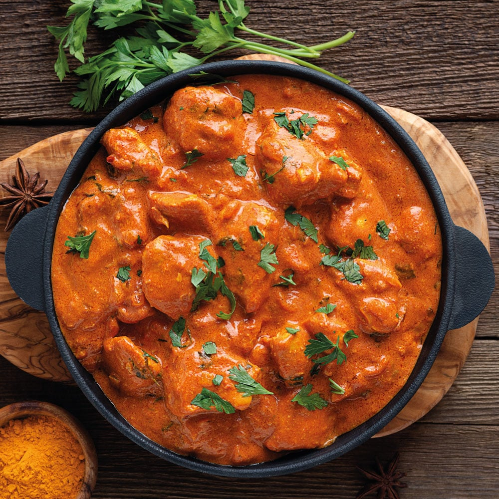

Batata vada is a popular vegetarian fast food dish from the Indian state of Maharashtra. The dish consists of a mashed potato patty coated with chickpea flour, which is then deep-fried and served hot with chutney. Across different regions of India, this dish is also known as aloo bonda, aloo vada, batata bonda, potato bonda and potato vada.
THE BOMBAY SANDWICH
A Bombay Sandwich - also known as a Mumbai Sandwich is an Indian Sandwich that is popular in the streets of Mumbai.This vegetable sandwich is made with green chutney, butter, veggies, cheese, and chat masala. You can enjoy this sandwich grilled or not, it tastes great either way.
BHELPURI
Bhelpuri is a savoury snack originally from India, and is also a type of chaat. It is made of puffed rice, vegetables and a tangy tamarind sauce, and has a crunchy texture. The Mumbai recipe has spread to most parts of India, where it has been modified to suit local food availability.
CHICKEN MAYO ROLL
The Chicken Mayo Roll is a popular street food item in Mumbai, typically consisting of cooked chicken pieces mixed with mayonnaise and wrapped in a soft, thin flatbread or roti. It's often served with spicy chutney or sauce for added flavour. It's a savoury and satisfying snack that's enjoyed by locals and visitors alike for its delicious combination of flavours and textures.
RAGDA PATTICE
Ragda patties (colloquially ragda pattice) is a dish of mashed potato patties and pea sauce, and is part of the street food culture in the Indian state of Maharashtra. This dish is a popular street food offering and is also served at restaurants.

BUTTER CHICKEN
Butter Chicken is a beloved dish in Mumbai, featuring tender chicken pieces cooked in a creamy, tomato-based sauce flavoured with butter, cream, and a blend of aromatic spices. It's typically served with naan bread or rice, and garnished with fresh cilantro.
VADA PAV
Vada pav is a vegetarian fast food dish native to the Indian state of Maharashtra. The dish consists of a deep fried potato dumpling placed inside a bread bun (pav) sliced almost in half through the middle. It is generally accompanied with one or more chutneys and a green chili pepper. Although it originated as an affordable street food in Mumbai, it is now served in food stalls and restaurants across India. It is also called Bombay burger.
PAV BHAJI
Pav bhaji is a street food dish from Mumbai, India consisting of a thick vegetable curry (bhaji) served with a soft bread roll (pav). It originated in the city of Mumbai, Maharashtra. The dish originated as a fast lunchtime dish for textile mill workers in Mumbai. Pav bhaji was later served at restaurants throughout the city. Pav bhaji is now offered at outlets from simple hand carts to formal restaurants in India and abroad.
KOLHAPURI MUTTON
Kolhapuri Mutton is a spicy and flavourful dish originating from the city of Kolhapur in Maharashtra, India. It features tender pieces of mutton (goat meat) cooked in a fiery red gravy made from a blend of aromatic spices, including Kolhapuri masala, which is known for its intense heat and rich flavour. The dish often includes ingredients like onions, garlic, ginger, tomatoes, and dried red chilies, resulting in a bold and robust taste.
MISAL PAV
Misal pav is a dish from the Indian state of Maharashtra. It consists of misal (a spicy curry usually made from moth beans) and pav (a type of Indian bread roll). The final dish is topped with farsan or sev, onions, lemon and coriander (cilantro). It is usually served hot with bread or rolls toasted with butter and buttermilk or dahi and papad. It is served as a breakfast dish, as a snack and also as a full meal.
CHICKEN MANCHURIAN
Chicken Manchurian is a popular Indo-Chinese dish found in Mumbai and other parts of India. Chicken Manchurian is often served as an appetiser or main dish, accompanied by fried rice or noodles, and garnished with chopped scallions or cilantro. It's loved for its unique fusion of Indian and Chinese flavours.
PURAN POLI
Puran Poli is a traditional Maharashtrian sweet flatbread that is popular in Mumbai and other parts of India. It consists of a soft, thin, unleavened bread filled with a sweet stuffing made from cooked chana dal (split Bengal gram), jaggery (unrefined cane sugar), ghee (clarified butter), and aromatic spices like cardamom and nutmeg. Puran Poli is often enjoyed during festive occasions like Holi and Diwali.
Falooda is a popular dessert beverage in Mumbai and other parts of India. It typically consists of several layers of ingredients served in a tall glass. Chilled milk often flavored with rose water or vanilla is added for sweetness and aroma. Finally, the Falooda is topped with a scoop of ice cream, usually either vanilla or kulfi (Indian ice cream), along with nuts and dried fruits for garnish.
MODAK
Modak is an Indian sweet dish popular in many Indian states and cultures. According to Hindu and Buddhist beliefs, it is one of the favourite dishes of Ganesha and the Buddha and is therefore used in prayers. The sweet filling inside a modak consists of freshly grated coconut and jaggery, while the outer soft shell is made from rice flour or wheat flour mixed with khowa or maida flour.